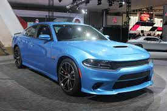
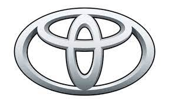
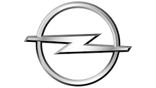
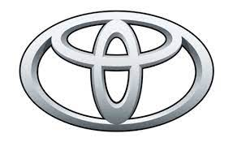
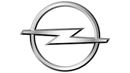

Dodge — avtomobil və yük maşını markası. Horake Doc və Con Doc qardaşlar tərəfindən qurulan şirkət ilk qurulduğunda Ford Model T üçün hissələr istehal edirdi. Avtomobil istehsalına başladıqdan sonra 1914-ci ildən 1927-ci ilə qədər Dodge Brothers Motor Vehicle Company adını istifadə etmişdir. 1928-də Chrysler MMM. tərəfindən satın alınmışdır. Şirkət 1970-ci illərdə ailə avtomobilləri, 1980-ci illərdə isə kiçik həcmli və ön çəkişli avtomobil istehsalına başlamışdır. Chrysler ilə birlikdə 2002-də Daimler-Chrysler Avtomobil Qrupuna qatılmışdır. Ancaq 2007-ci ildə Daimler-Chrysler Qrupunun dağılması nəticəsində bağlı olduğu əsas firma Chrysler Qrupunu Cerberus adlı investisiya firması tərəfindən satın alındı. Dodge, Amerika Birleşik Devletleri kökenli otomotiv markası. Horace Dodge ve John Dodge kardeşler tarafından kurulan firma ilk kurulduğunda Ford Model T için parça üretmiştir. Otomobil üretimine başladıktan sonra 1914'ten 1927'ye kadar Dodge Brothers Motor Vehicle Company ismini kullanmıştır. 1928'de Chrysler A.Ş. tarafından satın alınmıştır. Şirket 1970'li yıllarda aile otomobilleri, 1980'li yıllarda ise küçük hacimli ve önden çekişli otomobil üretimine başlamıştır. 1990'lı yıllarda ürün gamına pikap ve ligt-truck modellerini de katmıştır. Chrysler ile birlikte 2002'de DaimlerChrysler Otomotiv Grubu'na katılmıştır. Ancak 2007 yılında DaimlerChrysler Grubunun dağılması sonucu, bağlı bulunduğu ana firma Chrysler Grubunu Cerberus adlı yatırım firması tarafından satın alınmıştır.

 


